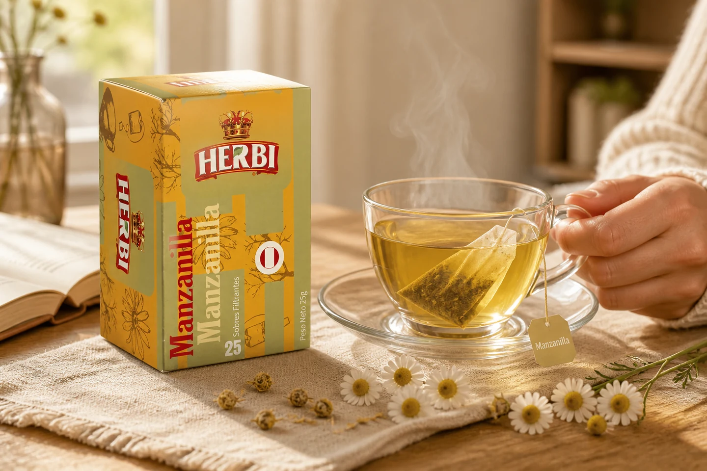
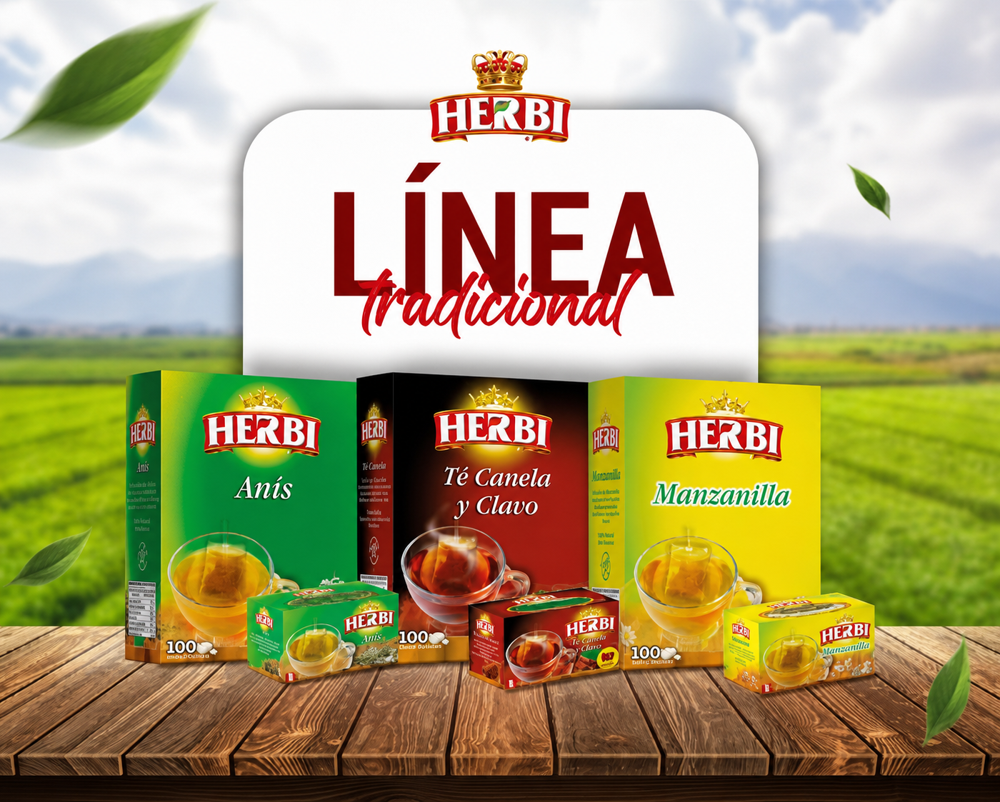
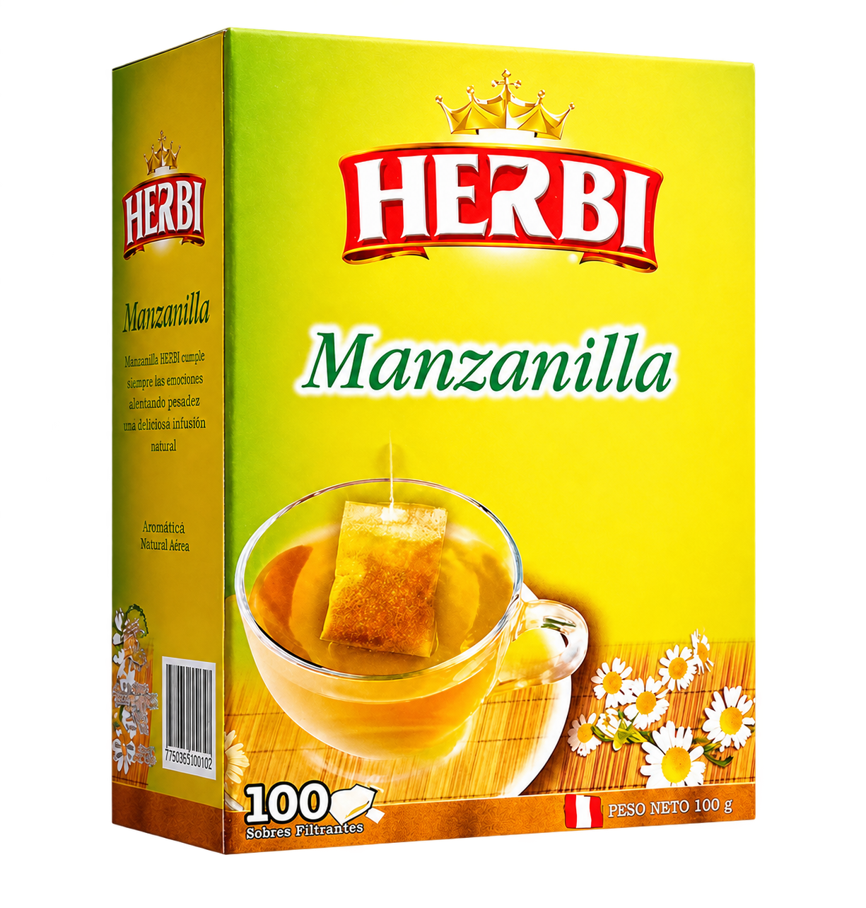
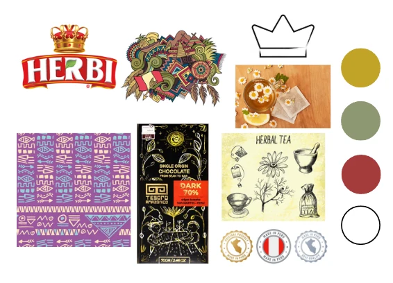
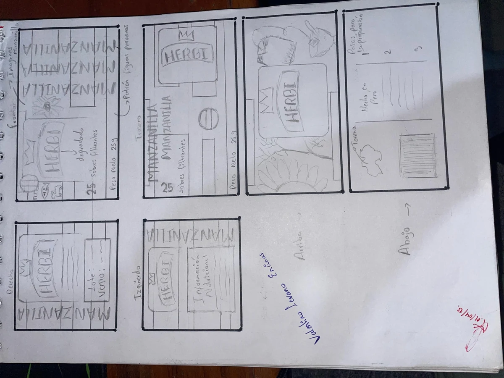
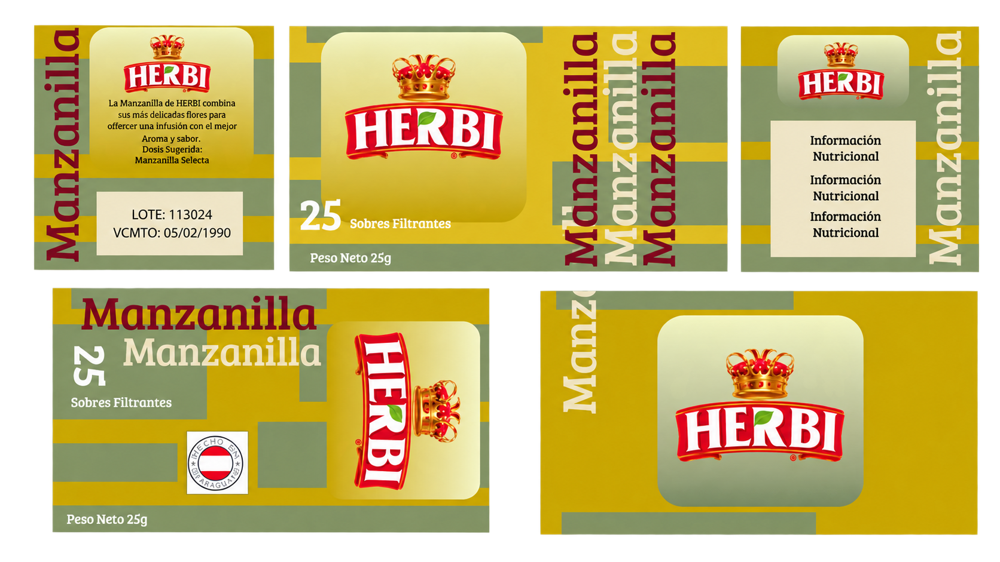
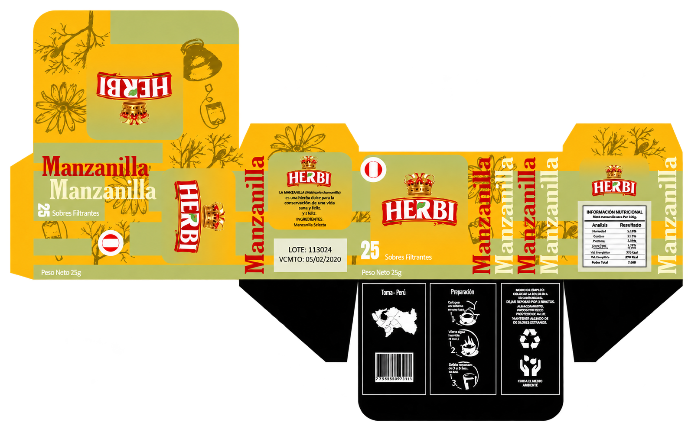

Herencia
Conservar el logotipo y la relación con el origen peruano para mantener continuidad.

Rediseño de packaging
01 · Contexto de marca
Una marca peruana con una presencia cotidiana.
Herbi ofrece infusiones filtrantes elaboradas a partir de plantas naturales. El proyecto se concentra en actualizar la presentación de Manzanilla sin romper el reconocimiento construido por la marca.
Portafolio de marca
Manzanilla, anís, té y otras variedades forman parte de un repertorio familiar. Esa cercanía era un activo que el rediseño debía preservar.

02 · Público objetivo
La marca llega a un público amplio. El consumo es especialmente frecuente entre personas mayores que crecieron incorporando estas infusiones a su rutina. El nuevo empaque debía conservar familiaridad y conectar también con nuevos compradores.
03 · Diagnóstico

04 · Estrategia de diseño
Conservar el logotipo y la relación con el origen peruano para mantener continuidad.
Dar protagonismo a la variedad y ordenar la información por bloques reconocibles.
Usar ilustración botánica y una paleta cromática vinculada con la manzanilla.
05 · Sistema visual

Inter en alto peso aporta presencia a títulos y variedades. La repetición tipográfica convierte el nombre del producto en un recurso gráfico propio.
06 · Proceso

Se probaron distintas ubicaciones para la marca, la variedad, la información nutricional y las caras laterales. La búsqueda principal fue equilibrar reconocimiento y flexibilidad.
Los bloques de color organizan cada cara; la palabra Manzanilla crea repetición y el negro separa la información funcional.

07 · Propuesta final
El amarillo manzanilla, la retícula modular, la ilustración botánica y la tipografía repetida construyen un empaque reconocible desde todos sus lados.

Resultado en contexto
El rediseño transforma la variedad en el eje visual y conserva los códigos que conectan el producto con su historia.
Síntesis
Manzanilla se convierte en el eje principal de la jerarquía.
Color, módulos y tipografía conectan todas las caras del empaque.
El logotipo y el origen peruano mantienen continuidad con la marca.